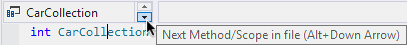
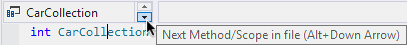

Move quickly among scopes in the active document. Move first to the next outermost scope. When at global scope, move to the adjacent scope.
")
The shortcuts provide more efficient access than the tiny arrows.
Move quickly among scopes in the active document. Move first to the next outermost scope. When at global scope, move to the adjacent scope.
The shortcuts provide more efficient access than the tiny arrows.
